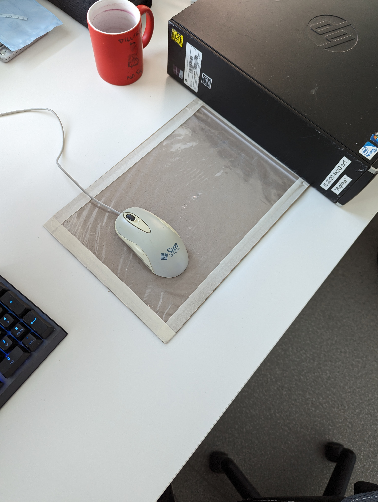

A visit from abroad
There are some things that change in life. Maybe you switch companies, travel to a different town, lose and meet new friends.
But then there is Nunaweb. Nunaweb is constant. Nunaweb won't leave you alone... Never.
The changes I worked on got approved last week but now the deploy of the GitHub workflow failed.
Throughout the week I tried to get it running but for now the deployment failes when trying to pull several of the needed containers.
On the other hand, on monday Kairi and Mr. Döbler visited me during work and together with the epmloyees of Zubax, we talked about the goals of the company and about the goals of the OSZ IMT organizing this vocational training abroad.
After the two parties got to know each other and after exchanging contacts they left, but we wouldn't be seperated for long, as Mr. Döbler, Stephan and me would meet on the next day in restaurant.
We had really nice talks, first about our experiences regarding the current and further international vocational trainings, but later on about many more diverse topics. So many in fact I would need a cold beverage to list them all. :)
Because of cramps I switched my mouse with an old model, which needed a mouse pad.
Because we hadn't any left I decided to build one myself using a cardboard that was laying around.
Maybe I can make a buisness out of this?

Monday-Friday, July 24th-28th
Experimentation with a vacuum sealer
In the middle of the week a new and very heavy package arrived at our office ny colleagues started to unbox.
I do envy them. There are very vew things in life I like more than unpacking technichal products.
Soon they revealed a new vacuum sealing machine.
The company works on a prototype of a magnet, which can be controlled via a wire coil, creating an elektromagnetic force.
On this magnet an epoxy layer needs to be molded onto.
The reason for aquiring that machine is, that this epoxy layer is full of air bubbles which make the stucture briddle and prone for instability.
By pouring the epoxy on the magnet inside a vacuum the air bubbles should get sucked out, fixing the problem.
Wednesday, July 26th
Ideas what to visit in Tallinn
Here are some places I recommend, one should see when visiting Tallinn:
Monday-Tuesday, July 3th-4th
A car-centric society
The soci


Friday, July 28th